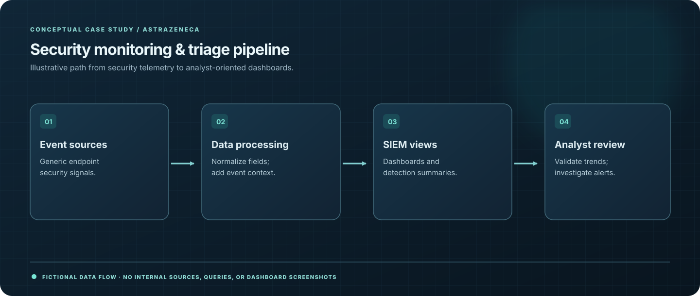

04 / PROJECT CASE STUDY · 2025
Splunk Deception Monitoring Dashboard
Turning endpoint deception signals into a clearer operational picture.

01 / CONTEXT
The challenge
Valuable detection events lose impact if responders cannot understand trends, context, or high-priority activity at a glance.
02 / EXECUTION
My approach
- Built a Splunk dashboard to centralize alerts from the Microsoft Defender deception initiative.
- Created views highlighting meaningful deception events for monitoring and review.
- Organized information to help analysts navigate suspicious activity more efficiently.
03 / EVIDENCE
Outcomes & contribution
- Created centralized security-monitoring views for deception activity.
- Enabled SOC analysts to review relevant signals with less context switching.
- Demonstrated practical Splunk data visualization in a security operations setting.
04 / TAKEAWAY
What I learned
Good security dashboards reduce ambiguity and help analysts move from signals to decisions.
Sharing & confidentiality
Public-safe summary. No dashboard screenshots, queries, internal event schemas, or system-level details are provided.